Fried Fish with Lamchut
Ah Ma's | Cooked on 12 March 2026
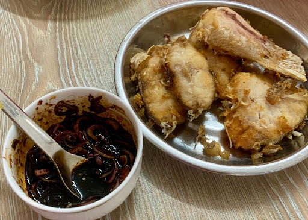
Frying the fish
Buy fish, sprinkle salt then wash off, then freeze.
Thaw when you want to cook.
Heat oil, then put in fish. Don't move it once first put in.
Fry 4min each side. Flip carefully so that the skin doesn't fall off (especially if it's stuck to the pan).
Once golden, push out of the oil to drip dry then transfer to plate.
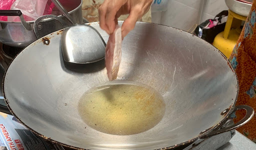
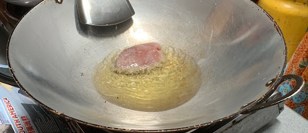
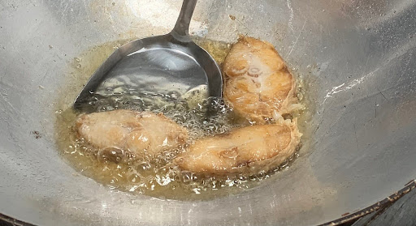
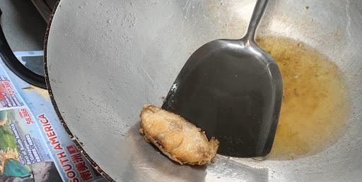
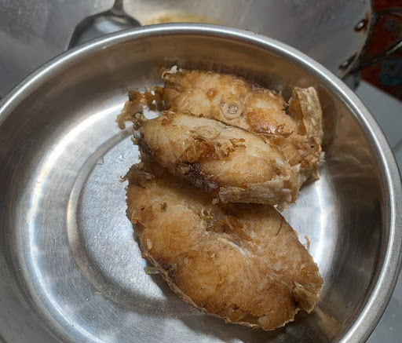
Lamchut dipping sauce
Thinly sliced shallots, sambal, dark soy sauce, white sugar, lime juice, cut chili for garnish/ extra spice.
Can also use as a dipping sauce for fish, stingray, prawn.
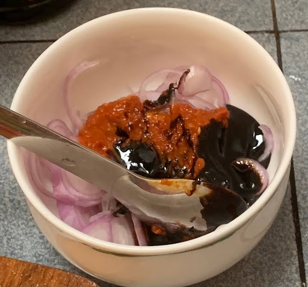
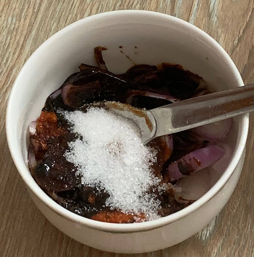
Techniques for complete newbies (i.e. me)
⭐ Slicing the shallots
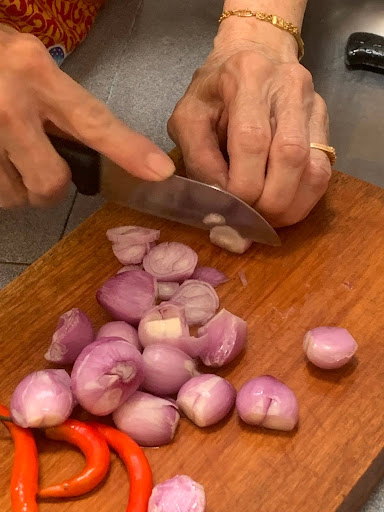
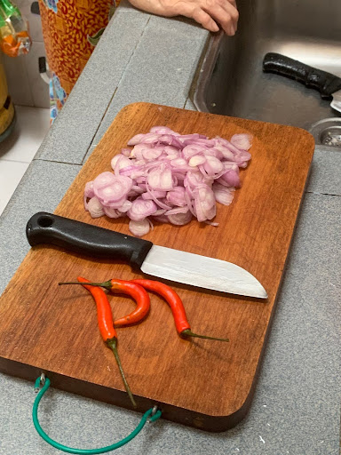
⭐ Squeezing the limes
Cut in half. Squeeze over a sieve to remove seeds.
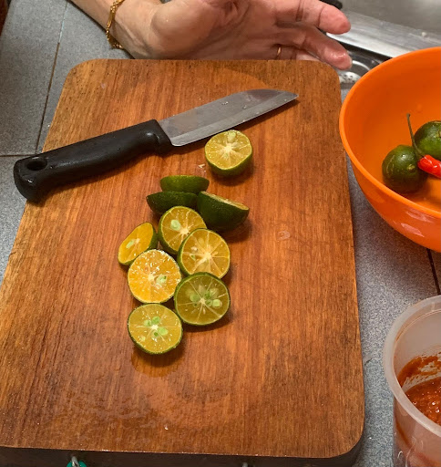
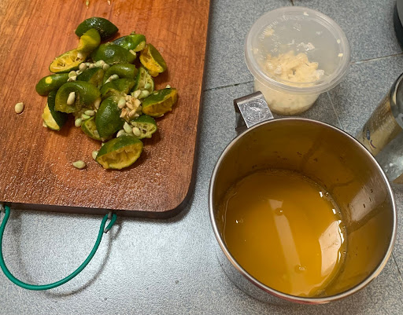